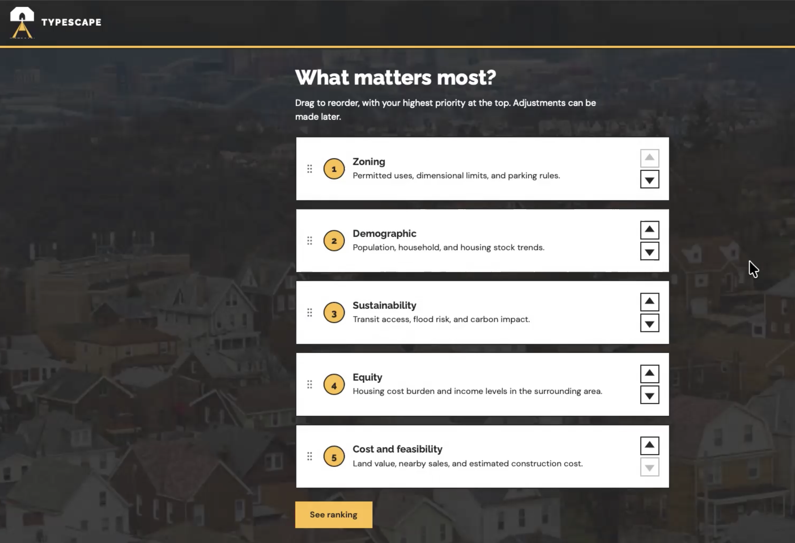
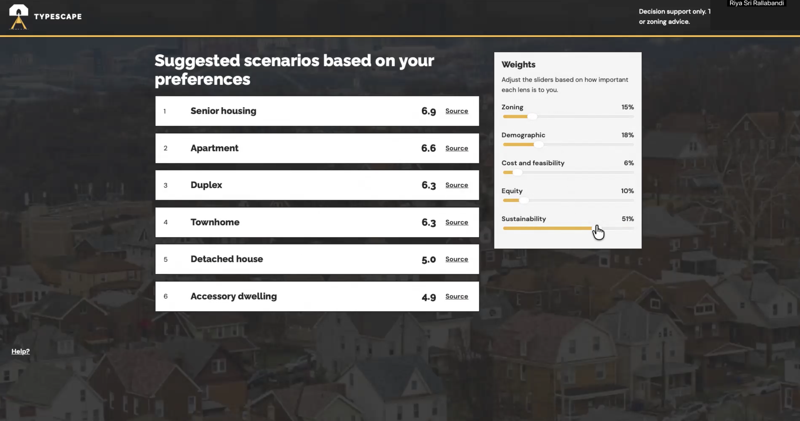

Projects / typescape
Multi-agent · Human in the loop
Typescape
Industry: Housing / Urban Planning
A decision support tool that compares six housing types on one real Pittsburgh lot. Five independent AI reviewers score each type from a different angle, and the housing experts using it sets how much each angle matters. It never picks a winner. I built it using Cursor for the AI for Housing Hackathon to learn how to orchestrate multiple agents.
Scores compare housing types on one lot and are not predictions. This is not legal, financial or zoning advice.
Problem
Which type of housing fits this piece of land?
This project tries to find the "Type" of housing that is best suited for a "Landscape". That is where the name Typescape comes from.
For any lot, planners have to weigh many things that come from different places: what the zoning code allows, who lives nearby, what it costs to build, who the housing serves, and how it fits the climate. Each one has its own facts and sources, and they often point in different directions.
I set these requirements:
- Compare six housing types: detached single family home, duplex, townhome, apartment building, accessory dwelling unit (ADU) and senior housing.
- Look at the lot from five angles: zoning, demographics, cost, equity and sustainability.
- Back every claim with a source.
- Say "cannot determine" when the data is missing, instead of guessing.
- Show the tradeoffs and let the housing experts decide what matters most, instead of naming one winner.
I built it for Track 3 of the hackathon, Housing Typology, Equity and Climate Matchmaker. I worked alone, using Cursor to build it and Claude to plan the design and draft the prompts. The prototype is tied to one lot: 170 Aidan Ct in Brookline, Pittsburgh.
Approach and architecture
Let the reviewers disagree, then let the housing experts decide
The five reviewers look at very different things, such as what the law allows, what it costs and who it serves. So when they disagree, that is useful information. I kept the reviews independent, added a Chair that only points out the conflicts, and let the user set the weights.
The five reviews never see each other's work. Facts such as zoning rules, cost per square foot, transit distance and flood zone are attached by code, and the model only scores and explains.
The Chair sorts every disagreement into one of two kinds. A factual conflict is when two reviews make incompatible claims about the same fact, such as one saying a use is permitted and another saying it is not. These need to be checked. A value tradeoff is when both reviews are right but care about different goals. A gap in scores alone counts as a value tradeoff.
The final ranking is plain arithmetic. It starts with equal weights, labeled as an equal-weight view and not as the answer. The user can drag the five angles into order of importance, which turns into weights, and then fine tune with sliders. Each type shows how much each review added to its score.
Tools and methods
What I used and why
| Piece | What I used | Why |
|---|---|---|
| Agents | Five analysts and a Chair, each a language model call | Each analyst sees only its own facts. The Chair sees all five reviews. |
| Model | Groq gpt-oss-120b, with Gemini 3.5 Flash-Lite as a backup | Both have free tiers. The 120b model followed the required format more faithfully than the smaller 20b. |
| Output rules | Pydantic v2 | It rejects any output that does not match the format, including extra fields. |
| Backend | FastAPI and Uvicorn | One API serves the analysis and the weighted view. Results are saved to local files. |
| Map | Shapely, Leaflet, OpenStreetMap tiles | They show the lot boundary and check which overlays touch it. |
| Ranking screen | SortableJS and sliders | Drag to rank the five angles, then fine tune the weights. |
| Tests | pytest and httpx | Tests use saved example data, so they run without calling a model. |
| Built with | Cursor and Claude | Cursor for writing code. Claude for planning, design, and prompt drafts. |
The public data behind it
| Source | What it gives | Its limit |
|---|---|---|
| Pittsburgh zoning code, Title 9 | What each district allows, plus parking and building size rules | Only the residential chapters (903 and 911 to 914) |
| WPRDC zoning map | Which zoning district the lot is in | The ADU overlay is a map screen only |
| Allegheny County parcels | The lot boundary, found by parcel ID | May lag behind assessment updates |
| Census ACS and 2020 census | People and households in the census tract | Estimates come with margins of error |
| HUD CHAS, 2013 to 2017 | Households paying too much for housing | Tract level and older, so it cannot separate housing types |
| County assessments and sales | Land values and sales in ZIP 15226 | Valid sales only |
| ICC Building Valuation Data, Aug 2026 | Construction cost per square foot | A national average, so every cost score is an estimate |
| PRT transit stops | Distance to the nearest stop | Scheduled service only |
| FEMA flood layer | The lot's flood zone | A screening, not a determination |
Demo
Watching it work


Results
What the reviews found for the demo lot
I did not measure accuracy for this project, because there is no single right answer to compare against. What I can show is what each review said about 170 Aidan Ct. These come from my test runs during the hackathon.
| Review | What it found |
|---|---|
| Zoning | The lot is zoned R2-L, which allows two-unit homes. Duplex, townhome and detached house scored high. Apartment and ADU scored low. |
| Demographic | It used census estimates for the tract, with their margins of error. It could not determine vacancy by building type. |
| Cost and feasibility | Scores were low to marginal. They rest on a national average cost per square foot, labeled as an estimate. |
| Equity | It reported how many households in the tract pay too much for housing. It scored all six types the same, because tract data cannot tell the types apart. |
| Sustainability | The nearest transit station is about 637 meters away. The lot is in flood zone X (minimal hazard) and has a steep slope overlay. Carbon effects are shown as estimates by type. |
The flat Equity scores are a limit of the data, not a bug. Raising the Equity weight cannot separate the housing types, and the weighted view says so.
What the design delivers
A planner can see where the five reviews agree, where they conflict on a fact, and where they only value different things. They can then move the weights and watch the ranking change. Every ranking is labeled as the user's weighted view and never as a consensus.
Decisions
The choices that shaped it
- Keep the five reviews independentThe reviewers measure different things: legal permission, money, equity, climate and demographics. Each one sees only its own facts and none sees another's output. When they disagree, that is usually the finding.
- Build a debate round, test it, then remove itI built a second round where reviewers could respond to each other. In live tests they mostly refused to change their scores. Resolving a disagreement is a human choice, so I deleted the round and left the choice to the weight sliders.
- Have a Chair point out conflicts, not settle themThe Chair labels each disagreement as factual or a value tradeoff. It never merges the scores or names a winner.
- Let the user's weights do the ranking, with no language modelThe ranking is plain arithmetic on saved scores and five weights. It starts at equal weights and is named the equal-weight view. A ranking from 1st to 5th is turned into weights with a standard rank order formula.
- Code owns the facts, and the model gives judgmentsZoning use tables, parking rules, census figures, cost per square foot, transit distance and flood zone are built into cited claims by code. The model scores all six types in a single call and explains its judgment. That way the model cannot change a fact.
- Say "cannot determine" instead of filling gapsI did not invent use tables, a Pittsburgh cost factor or carbon numbers. Without price data, Equity may repeat the tract's cost burden figures but must say that affordability by housing type cannot be determined.
- Set strict rules for what the model may returnEvery review must match a fixed format, with no extra fields. A malformed answer gets one retry. If the retry fails, the types with valid output are kept and the others get a score of 0 and a note, so one bad answer never stops the whole run.
- Choose a demo lot with real tradeoffs170 Aidan Ct has two-unit zoning, so the housing types really do compete, and it has a steep slope overlay, so the demo can show a limitation.
- Run the demo from saved resultsThe analysis runs once and is saved. Later requests, including weight changes, read the saved results and make no model calls. Lots that are not saved return an error and do not start a live run.
Challenges
What broke and how I fixed it
- Free model limits and outagesThe Gemini model I started with returned a 404 because it was no longer available to new users, and its replacement returned capacity errors. I moved to Groq, whose free tier allows about 8,000 tokens a minute. To stay under that, I sent less data (no map shapes), ran the analysts one at a time, and scored all six types in one call. When Groq's daily limit ran out, I switched to Gemini 3.5 Flash-Lite with a setting change.
- Official data was hard to reachThe zoning code website blocked automated downloads, so I loaded the chapters through a browser and saved their text. The old zoning dataset link returned a 404, and the county parcel service was down. I found the new link, and I queried the county parcel layer for one lot instead of downloading a 444 MB file.
- The model invented detailsIt made up a citation, invented parking rules, and treated a missing overlay as a fact. I fixed this by moving facts into code and checking citations exactly.
- The data could not answer every questionEquity data is at tract level and from 2013 to 2017, so it cannot rank housing types. Cost data is a national average. I labeled both as limits and did not hide them.
- The model's words driftedEven after I banned two words, it wrote "affordability mismatch risk" in an Equity summary. I now reject any summary that links a housing type to affordability, whatever the wording.
- Planning words did not match the zoning codeThe brief says "townhome", but Title 9 says "Single-Unit Attached". I kept "townhome" in the output and made the code name an alias.
How I verified the AI's work
Valid format does not mean correct
- The format is checked by codeMy first live call used the wrong field names, and the format check rejected it. After I added an example claim to the prompt, the next call returned valid reviews for all six types.
- I read the output, not just the formatMy first full test produced 30 valid assessments, but it read a blank Use Table cell as a rule from another chapter, invented parking rules and treated a missing overlay as a fact. I tightened the prompts and attached the overlay check in code.
- Citations must match exactlyThe model invented a citation (a section number that does not exist). Now every source it gives must match the exact strings from the data, and a mismatch fails after one retry.
- I caught a leftover slip by readingOne townhome summary said there is no off-street parking, but the parking rows it cited showed otherwise. After that, parking statements had to quote the exact minimum and maximum.
- I tested the Chair against a planted conflictI flipped one claim so that two reviews disagreed on a fact. The first Chair rule labeled it only as a value tradeoff. After I added a rule for factual conflicts, it flagged the factual conflict and a separate value conflict, and the normal duplex case stayed value only.
- I checked the wording of Equity in two waysA meaning based check rejects summaries that tie a housing type to affordability. A separate model review checks the cited figures for claims that go beyond the data.
- I read odd results as cluesAll six Equity scores came back as 5. I traced it to the tract level data and treated it as a limit, not as a bug to patch.
- I logged every decisionMy working rule for the AI was no silent workarounds. When a source failed, the decision, the alternatives I rejected and the reason all went into a log.
What I would improve
Limits and next steps
This was a hackathon prototype built to show how multiple agents can work together. It is not a planning tool that anyone should rely on.
Known limits
- The screen covers one lot. The analysis itself is not limited to one lot.
- Equity scores are flat, because the data is at tract level and cannot separate housing types.
- Construction cost is a national estimate with no Pittsburgh adjustment.
- The ADU overlay is a map screen, and senior housing is only partly mapped.
- The flood and slope checks are screenings, not determinations.
- Census figures have margins of error, and there are no permitting timelines.
- The zoning code covers only the residential chapters, not the full code.
- I did not test the scores against a planner's own judgment.
With more time
- Add HUD Fair Market Rents matched to housing types, plus HUD income limits, so Equity can tell the types apart.
- Refresh the equity data when HUD releases its next CHAS data, expected in December 2026.
- Open the interface to more lots, since the pipeline already supports them.
- Compare the reviews and the Chair's conflicts with a planner's own review of the same lot.
What I learned
Four things I will take into my next project
- Disagreement between agents is useful.When reviewers look at different things, a conflict is information. It is better to show it than to smooth it over.
- Let code own the facts and let the model give judgments.Once citations came from code, the model had much less room to make things up.
- It is better to admit missing data than to fill it in."Cannot determine" is an honest answer, and it tells the reader where the tool stops being reliable.
- Test an idea before keeping it.The debate round sounded good. When I tested it, the reviewers would not change their scores, so I removed it.